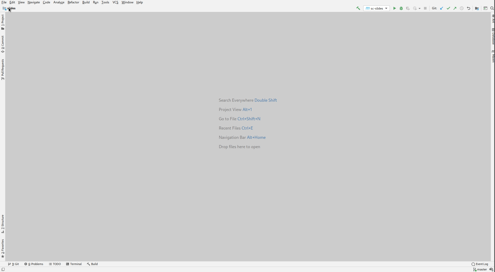
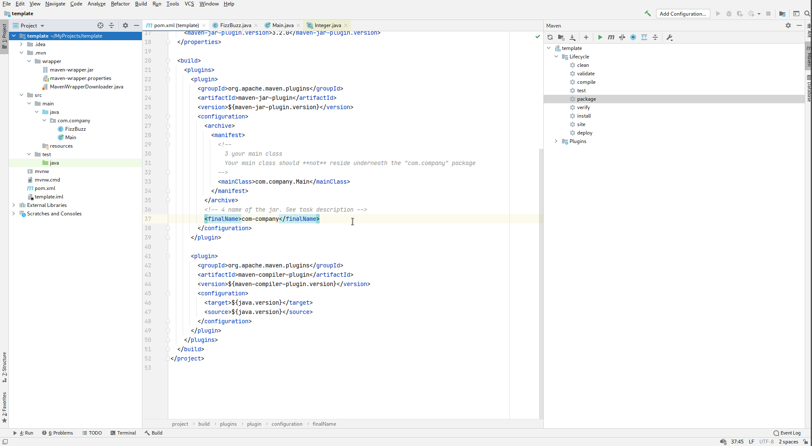
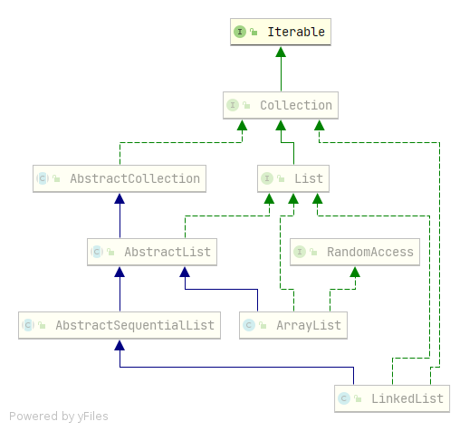

$ java -jar my-app.jar myArgumentsДенис Заведеев @2caco3 <happy96538@gmail.com>
Сборка jar / maven
Д/З
Интерфейсы
Абстрактные классы
Вложенные, внутренние классы
Локальные, анонимные классы, лямбды
A JAR (Java ARchive) is a package file format typically used to aggregate many Java class files and associated metadata and resources (text, images, etc.) into one file for distribution
Привычно запускать приложения так:
$ java -jar my-app.jar myArgumentsВ Д/З требуется
Создать jar
Сделать его исполняемым
Средствами Intellij IDEA
Использовать jar (не забудьте прописать Main-Class)
Скачать шаблон
Открыть проект в Idea
Поправить pom.xml (см. комментарии)
Выполнить команду (mvn clean package)
Сборка jar через maven
File
New → Project From Existing Sources
Выбрать pom.xml
template $ tree
.
├── mvnw # Для запуска, если maven не установлен (UNIX)
├── mvnw.cmd # То же самое для Windows
├── pom.xml # Файл проекта для maven
├── src # Все исходники в этой директории
│ ├── main # основной код
│ │ ├── java # Исходники на Java
│ │ │ └── com # пакет
│ │ │ └── company
│ │ │ ├── FizzBuzz.java
│ │ │ └── Main.java
│ │ └── resources
| └── test # Пока не нужно
│ └── java

Ctrl (2 раза)$ ./mvnw clean packageThe JAVA_HOME environment variable is not defined correctlyПопробуйте создать исполняемый jar
Ефим Михайлович показывал как это сделать средствами Idea
Или с помощью шаблона-архива через maven
Далее, если через maven:
Удалите имеющиеся классы
Напишите свои (не забыть поправить mainClass в pom.xml)
По jar / maven / Д/З
public class Student {
private final String name;
public Student(String name) {
this.name = name;
}
}ComparableКак отсортировать массив студентов?
Он ожидает, что элементы массива реализуют Comparable
ComparableComparable - интерфейс
Примерно такой:
public interface Comparable {
int compareTo(Object other);
}Если его реализовать, то Arrays.sort отсортирует массив в соответствии с логикой, прописанной в compareTo
Comparable@SuppressWarnings("rawtypes")
public class Student implements Comparable {
// ....
@Override
public int compareTo(Object o) {
Student student = (Student) o;
return name.compareTo(student.name);
}
}s1interfaces.SortStudents
Интерфейс Comparable представляет собой некоторый контракт между
Объектами, подлежащими сортировке
Алгоритмом сортировки
Экземпляры классов, реализовавшие Comparable, могут сравниваться между собой
И могут быть отсортированы их массивы / коллекции
default методыDemo (s1interfaces.StudentList)
Позволяют добавить новую функциональность в интерфейсы
Не нарушая совместимости со старым кодом
Иногда бывает и так
sample1, sample2
Методы, унаследованные от классов, имеют больший приоритет по сравнению с default методами
default методы могут переопределяться, в таком случае будет выбран самый специфичный
Если несколько default методов унаследованы от несвязанных интерфейсов, то - ошибка компиляции
Взято отсюда
Ключевое слово interface
Все методы по умолчанию - public
Если метод не static и не default, то он - abstract
private методы должны содержать реализацию
Не содержат полей (точнее поля - public static final)
Для реализации - ключевое слово implements
Один класс может реализовывать несколько интерфейсов
s2abstract
Ключевое слово abstract
Могут содержать абстрактные (abstract) методы
abstract методы не имеют реализации
Нельзя создать экземпляр абстрактного класса
А какая же между ними разница?
| Критерий | abstract class | interface |
|---|---|---|
| Да | Да |
Поля | Да | только |
Наследование* | Один | Несколько |
Реализация методов | Да | Да, |
Интерфейс - поведение
Абстрактный класс - основа для других наследников иерархии

s3intarray.IntArray, sample4, sample5
| Критерий | inner | static nested |
|---|---|---|
Ссылка на внешний класс | есть | нет |
Зачем? | Если пишем класс-помощник для внешнего класса | Скорее для логической группировки |
Как объявить? |
|
|
s4localclass
s5anonymous / sample6
Анонимные классы:
Могут обращаться к:
членам окружающего класса
локальным переменным, если они - final или effectively final
Могут иметь поля, методы, инициализаторы экземпляра, локальные классы, статические поля (если они - константы)
Не могут иметь статические инициализаторы, интерфейсы
s6lambda
Классы бывают:
Вложенные статические и вложенные нестатические (внутренние)
Локальные, анонимные
Для абстракции можно использовать:
Интерфейсы
Абстрактные классы
jar можно собрать с помощью maven